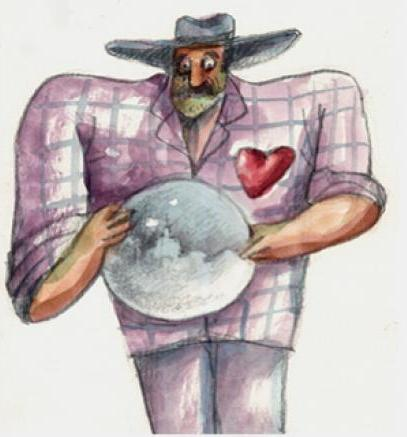
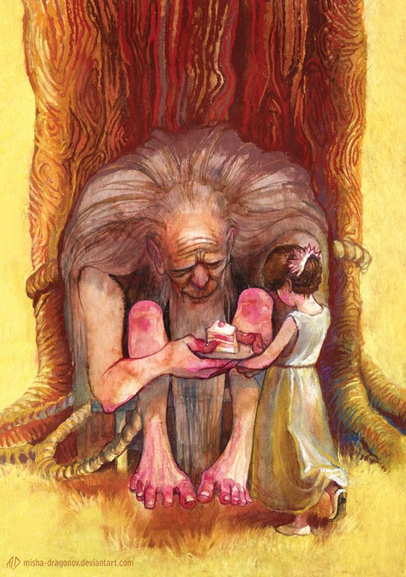

Bio
José Arcadio Buendía is the patriarch of the family Buendia. He is the founder of the Buendia family and the village of Macondo. José Arcadio Buendía is an insightful man, he believes in science and when gypsies come to Macondo with new inventions he gets excited to use that invention to help his community and explore the magic of science. Though he is seldom successful.
Name: José Arcadio Buendía Father: Unknown Mother: Unknown Cause of Death: Natural Death Lover: No Lover Spouse: Ursula Uguaran Generation: 1st Generation Children: Colonel Aureliano, Arcadio, Amaranta
|  |  | Left: José Arcadio Buendía discovers ice. Notice his read heart, signifying his love for science. Right: Tied to a tree because he went mad and now he only utters latin, which no one understands but Melquiades. |
Founding of Macondo
In his native place José Arcadio Buendía was a cock fighter. He was nearly one and a half years married to his first cousin Ursula, but he hasn't have a child yet (because of Ursula's fear. read more ). The people from village were saying that Ursula is still a virgin. José Arcadio Buendía did not like it. One day after he won a cockfight against Prudencio Aguilar , Prudencio said tauntingly "Maybe that rooster of yours can do your wife a favor." José Arcadio Buendía became furious and challenged Prudencio Aguilar to a fight to death. José Arcadio Buendía brought his grandfather's spear and killed Prudencio Aguilar. After that day Ursula and Jose Arcadio started seeing ghost of Prudencio Aguilar in their house. So they decided to leave the village for a new place where the ghost will not haunt them. Some young men with their families and José Arcadio Buendía decided to cross the mountains, and thus they found Macondo.